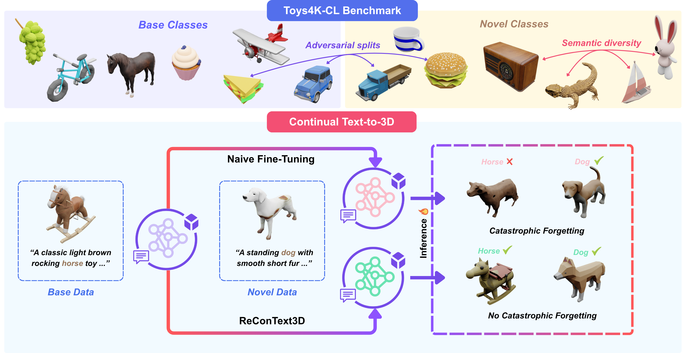

Continual learning enables models to acquire new knowl- edge over time while retaining previously learned capa- bilities. However, its application to text-to-3D genera- tion remains unexplored. We present ReConText3D, the first framework for continual text-to-3D generation. We first demonstrate that existing text-to-3D models suffer from catastrophic forgetting under incremental training. ReCon- Text3D enables generative models to incrementally learn new 3D categories from textual descriptions while preserv- ing the ability to synthesize previously seen assets. Our method constructs a compact and diverse replay memory. through text-embedding k-Center selection, allowing rep- resentative rehearsal of prior knowledge without modify- ing the underlying architecture. To systematically eval- uate continual text-to-3D learning, we introduce Toys4K- CL, a benchmark derived from the Toys4K dataset that pro- vides balanced and semantically diverse class-incremental splits. Extensive experiments on the Toys4K-CL bench- mark show that ReConText3D consistently outperforms all baselines across different generative backbones, maintain- ing high-quality generation for both old and new classes. To the best of our knowledge, this work establishes the first continual learning framework and benchmark for text- to-3D generation, opening a new direction for incremen- tal 3D generative modeling

@article{yourpaper2026,
title={Your Paper Title},
author={Author 1 and Author 2},
journal={arXiv preprint arXiv:xxxx.xxxxx},
year={2026}
}